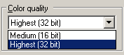

Configuring the operating system
OpenHoldem requires specific system settings in order to correctly intuit the game state from the pixels on-screen, and to correctly take poker actions. They have to be configured the right way before you can start working at your bot. Newer versions of OpenHoldem help you with this task; they execute automatical configuration checks and diagnose incorrect settings. However: you shouldn’t rely completely on these configuration checks. Better get things right in advance. And be extra careful, if you use a two-computer-stealth-setup: then it is a must to setup both PCs in absolutely the same way.
Color depth
The display color depth must be set to 24-bit or 32-bit. Most Table Maps are designed for 32-bit color depth, so your display should be set to that for maximum compatibility with others’ work.

Right-Click on the desktop -> properties -> Settings
Display resolution
You need enough display resolution to contain all poker client windows. In general, the minimum acceptable display resolution is 1024x768. The smaller resolutions 800x600 and 640x480 do not have enough real estate to show both the poker client and OpenHoldem without overlapping windows.
Font smoothing
Font smoothing should be turned off in order to interpret font pixels correctly. Our objective is to interpret the pixels as presented by the poker client, and not post-mangled by the operating system. To disable font smoothing: right click the desktop, and choose Properties-->Appearance-->Effects. Disable smoothed fonts in this dialog.
Font Smoothing disabled / Font Smoothing enabled from Notepad
Window style (themes)
Windows 2000 has only one window style. There are no themes, there is no candy blue coloring around windows, so you are OK if you use Windows 2000. With Windows XP (or later), it is suggested to use the “Classic” theme, which will present windows in the same style as Windows 2000. You are of course free to use whatever theme you want, but be aware that public Table Maps usually do not work unless they are used with the same theme that they were designed for. Most OpenHoldem botters use Windows 2000 or the Windows XP Classic theme.
Windows XP and ClearType
Language settings
Your language settings affect the behaviour of your system in several ways:
-
how to display special characters
-
what to use as the decimal separator: dot or comma.
-
the language used by your poker-client
Language settings may seem to be nearly irrelevant if you are a newbie, but incorrect settings can affect the scraper engine and the autoplayer severly, even up to complete failure. The only settings, that are guaranteed to work are english text with US keyboard. Others may or may not be compatible. If you are new to botting be smart and stay on the safe side; there have been more than enough lengthy threads by desperate newbies — mostly caused by incorrect settings.